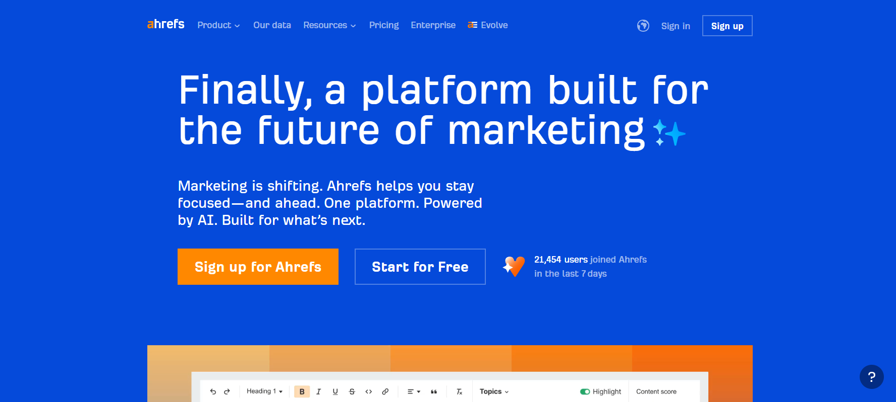
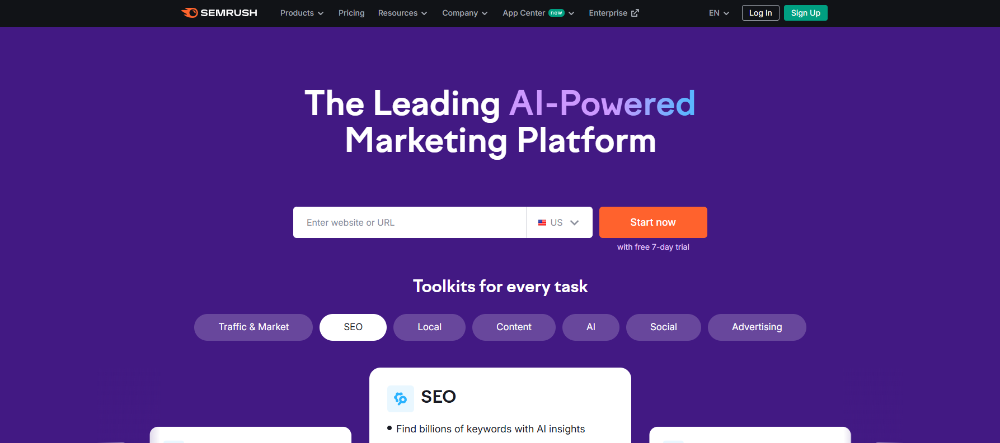
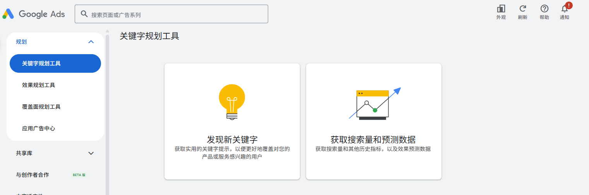
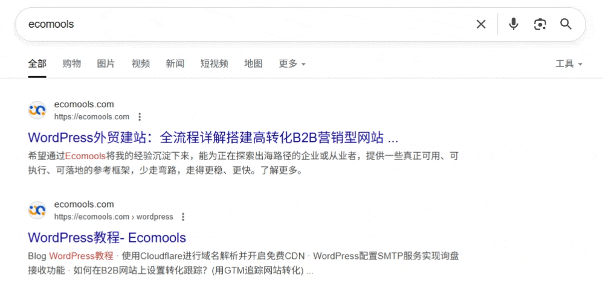
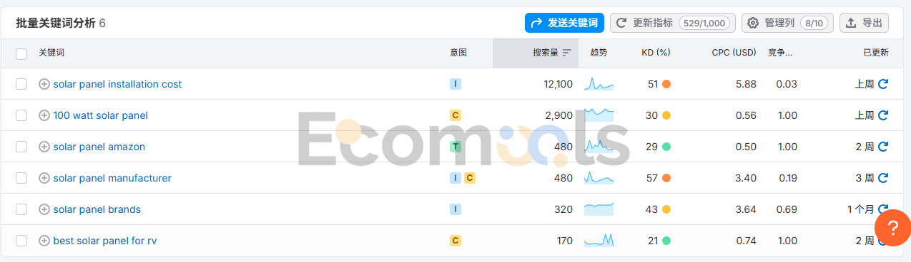

Google SEO能够为企业带来源源不断的流量，带来恒久的价值。其价值体现于背后的用户群体都是你的目标群体，都是带着明确“目的”的用户。
这些用户对你的企业、产品、服务都有兴趣，有着比其他渠道来的用户更强烈的消费意愿。而任何成功的SEO项目，其核心都是关键词研究，这是其他后续一系列优化的基础。
用户在搜索引擎中输入的查询词就是我们说的关键词，关键词研究的目的是为了了解用户背后的潜在需求。
然而，许多网站未能进行有效的关键词研究，这可能是导致90%以上的网页没有自然流量的主要原因。
关键词研究是谷歌SEO的重点，它不但可以帮你了解你的受众，还能够：
- 让网站涵盖更多主题，增加行业权威，建立品牌知名度
- 获取更多潜在客户
- 搜索趋势一直都在变，用户在搜索引擎中的搜索字词也会发生变化。定期进行关键词研究及时发现新的关键词和升级你的内容，在竞争对手察觉之前抢占这部分流量。
Tips: 如果你要为你的博客页面做关键词，不妨了解一下主题研究。相比关键词研究，主题研究更适合博客板块；再了解下主题簇集，能够提升话题权威。这两块结合能够更好地帮助你在谷歌中建立主题信任。在对博客板块进行关键词研究的时候，千万不要只挑KD低的关键词来进行内容撰写。
谷歌SEO关键词研究工具推荐
工欲善其事必先利其器，在做关键词研究的时候借助一个好的关键词工具可以帮我们达到事半功倍的效果，还能帮助你发现更多具有商业价值和转化潜力的词汇。
所以在开始正式进行关键词调研之前，我们先了解一下常用的关键词调研工具。
以下是我推荐的几款在外贸ToB领域实用性较高的关键词研究工具：
Ahrefs

Ahrefs 是业内公认的强大SEO工具，它的数据量大、覆盖全球多个语种市场，尤其适合外贸企业做跨境竞争对手分析和长尾词拓展。它的亮点在于能发现许多别人忽略的词，并提供真实的流量估算和关键词难度评分。
Ahrefs最出色的功能是它的反向外链的分析能力，应该是目前市面上最好的，我自己做外链的时候会结合SEMrush来用。
Ahrefs在关键词研究的维度上提供关键词难度、搜索量、点击量、付费点击价（CPC）等指标，还支持主题建议，非常适合内容策划。
主题建议是什么呢，Ahrefs 会在你输入某个关键词后，比如说“solar panel price per watt”，Ahrefs能够自动识别该关键词最有效的“宽泛主题”是 “solar panel installation cost”，这个功能能够帮你优化优化更宽但相关的话题，通常能够让我们获得更多流量。
但它的价格较高，对于预算有限的中小企业来说是一道门槛，同时其中文数据的准确度略逊于英文，不过这是几乎所有主流的关键词研究工具的共同问题。
SEMrush

SEMrush 也是我们在做ToB外贸的时候关键词工具之一，优势在于功能全面，既支持SEO又能分析PPC广告，还可以追踪不同国家的SERP和关键词趋势，适合多市场、多渠道的企业用户。
如果你想系统地优化一个B2B网站，SEMrush不仅可以帮你查找SEO机会，还能让你了解同行的广告投放情况，甚至可以直接进行广告关键词规划和预算估算。
不过，它和Ahrefs一样属于高价位产品，中文/非英语市场部分长尾数据会出现覆盖不全的情况。
Google Keyword Planner（免费，谷歌广告专用）

Google Keyword Planner 是一个专门为广告商设计的工具，主要用来研究和分析用于Google广告系列的关键词。我们也可以用它来进行关键词研究。
Google Keyword Planner能够帮助你发现与你的业务相关的关键词，跟Ahrefs和SEMRush相比，低竞长尾词并不是很多（因为搜索量太低显示不出来）。
另外需要注意的是，Google Keyword Planner 所显示的“竞争程度”其实是指广告主在该关键词上的投放竞争激烈程度，即有多少广告主在争抢该词的广告位，这一指标会受到你所选地域和广告网络的影响。它并不代表该关键词在自然搜索（SEO）领域的优化难度。
因此，使用该工具进行SEO关键词筛选时，需要结合其他SEO工具的难度评分、实际搜索结果页面（SERP）分析等，综合判断关键词的可操作性和竞争强度。
Google Auto Suggest
Google Auto Suggest可以帮助我们挖掘用户真实的搜索词。我们在谷歌搜索框中输入我们的核心业务词后，然后再加上空格，遍历数字母a-z，或者加入“for”、“with”等常见介词并再次遍历，就能快速拓展出大量长尾关键词。
有技术的小伙伴也可以通过爬虫或API等自动化方式批量采集，极大提升效率。
这些谷歌给我们提供的联想词是基于大量用户的真实搜索行为和实时数据生成，极具参考价值。
同时又将结果整理到表格，配合SEO工具筛选，结合自身业务分配到不同类型页面（如产品页、博客、FAQ），为内容选题和布局提供数据支持。

我们也可以通过参考竞争对手来获取关键词信息。这个是判断关键词是否值得布局、是否具备商业价值的重要方法之一。通过分析主要竞争对手的网站，你可以直观地看到他们正在重点优化和布局哪些关键词，以及这些词实际带来的流量表现。
如果你的核心对手已经在某些关键词领域取得不错的排名，说明这些词背后存在真实需求和可观的商业机会。反之，如果目标关键词在竞争对手网站中几乎没有布局，可能要重新评估其投入产出比。
如何进行谷歌SEO关键词研究？
第一步：确定核心关键词
首先确定核心关键词，这个核心关键词要与实际业务相符合。
我们做关键词调研的核心目的，是站在潜在客户的视角，去思考他们在Google上会用哪些词来搜索你的产品，以及这些关键词是否精准对应你的主营业务。
如果不相关，这样的关键词即使有流量，也很难带来实际询盘和订单，因此完全可以果断舍弃。
在实际操作中，我们可以先依靠行业经验，梳理出产品的核心词、属性词和客户常用表达，再通过观察竞争对手和关键词工具进行数据验证，分析这些词的搜索量、竞争度和趋势。
只有那些和业务高度相关的核心关键词，才能真正为企业带来有效流量和实际订单。
实操举例：我们假设我们是做太阳能板的供应商，那么我们确定核心词是 solar panels
第二步：拓词建立词库
“拓词”其实就是以你的核心业务词为出发点，去挖掘和发现更多相关的关键词。
我们在第一步中明确了目标受众是谁、你的主营业务属于哪个细分领域。
选定了合适的关键词工具后，可以先输入与你业务紧密相关的核心词，生成一份初步关键词列表。
接下来，需要分析这些关键词的搜索量、竞争度和业务相关性，从中挑选出既有一定搜索热度、又不至于太难优化的关键词，作为重点布局对象。
在所有关键词研究方法中，最直接的方法还是——直接参考竞争对手网站的关键词布局。
通过分析同行或行业头部网站，你能发现哪些关键词实际被重点布局、哪些词能带来流量。然后再结合自己的产品和业务特点，基于这些关键词进行有针对性的优化调整，这样选出来的词更容易获得实际转化价值，也能避免闭门造车。
实操举例：
拓词库需要用到我们之前介绍的关键词研究工具，我这里以Google Auto Suggest这个免费工具为例，我们通过solar panels这个核心业务词来拓词。正常我们拓词可能都是有成百上千个的哈，这里我们就只是选取几个例子来举例说明：
拓词后的结果：
- solar panel manufacturer
- 100 watt solar panel
- solar panel brand
- solar panel amazon
- best solar panel for rv
- solar panel installation cost
我们拿到这里的拓词结果进入到下一步的分析评估中。
第三步：分析、评估和筛选
这个阶段要判断关键词的搜索量、用户搜索意图、商业意图和关键词难度。
关键词搜索量：确定是否有搜索需求
搜索量代表一个关键词的活跃程度，搜索量越高通常意味着竞争也越高。
另一个极端，如果关键词没人搜索，那么即使你排名上到第一也获得不了什么流量。
评估一个关键词应该在搜索量和难度之间找到一个平衡点。
长尾关键词就是这样的一个平衡点。长尾关键词搜索量没有很高，但是它竞争低、更加具体、转化的效果更好。
但是放弃高KD的关键词不一定是个明智的选择。选择关键词的时候应该以业务为出发点，不要以KD来决定是否采用该关键词。
业务相关的高难度关键词，反而应该尽早布局。高KD的关键词需要更多的外链和更优质的内容来获得一个良好的排名。
而且建议始终根据业务来手动筛选关键词，而不是依赖任何工具的关键词难度来做决定。
搜索意图：了解页面该如何满足用户需求
主流关键词搜索工具会将关键词分成四种搜索意图的类型：
- 信息性（Informational）。信息类关键词对应的用户购买意图并没有那么强烈，只是了解一下相关信息。但是通过创建行业相关的话题内容和提供准确有价值的内容，可以让目标受众把你试做可信的信息来源。
- 导航性（Navigational）。比如说bilibili, 淘宝，京东，这些就是导航性关键词。这种情况下用户确切地知道他们要找的是什么东西。这类词一般是品牌词。但是如果是投广告，可以专门开一个系列来投放竞争对手的品牌词。如果操作得当，可以你在行业中的品牌知名度，获得额外的高质量流量以及获得潜在客户。谷歌广告政策中是可以允许你将竞对品牌词加入到投放关键字中的，但是不允许你的广告标题和描述中直接使用竞对品牌名。
- 商业性(Commercial)。商业关键词是高意向关键词。背后的用户希望调查某个品牌或服务。或者两个品牌、产品之间的比较，常见的比如带属性的产品词（像上面说的“100 watt solar panel”）都是这类的关键词。
- 交易性（Transactional）。就是直接准备购买你的产品或订阅你的服务的客户。比如buy product online或者直接搜产品名这类关键词。
最直接的判断搜索意图的方法：直接把关键词放到谷歌去搜，看看实际排名的页面内容是什么，就能够准确地判断出关键词的搜索意图。
判断好搜索意图之后，就应该根据搜索意图去给用户提供对应的内容。搜索量比较大的词，一般搜索结果会比较多样化，比如solar panel这个词，有文章也有产品。说明在谷歌看来，这个词背后就是有多种搜索意图。
关键词难度：判断这个词能否获得排名
谷歌第一页的内容占据了关键字85%以上的流量，关键字排名越高点击率越高，通常也越有价值。
人们通常会点击排名靠前的结果，但是最重要的是要看页面能不能带来询盘和转化。
关键词难度（KD）是用来衡量关键词是否容易获得排名的指标。
市面上的关键词的难度（KD值）大都是根据外链情况来估算的，基本没有什么关键词工具可以精确估算需要多少外链才能够超越竞争对手。
但是，一般来说，KD值越低说明越有机会排在第一页。
关键词难度在不同的工具中会呈现出比较大的差异因此，手动评估显得更加重要，如果单纯根据工具的KD指（关键词难度）来判断，可能会错失掉价值较高的长尾词。
手动进行关键词难度的判断需要从SERP结果来判断的。以付费工具Ahrefs来举例，输入对应的关键词就可以看到SERP中每个位置对应的网站的DR。
DR是Ahrefs用来衡量一个网站外链资源的整体强度和权威性，分数范围是 0 到 100 分，分数越高代表该网站的外链质量和数量越强，域名权重越高。DR 并不是 Google 官方的权重指标，而是 Ahrefs 基于自身数据库计算得出的，用来对比和分析不同网站的外链实力，常用于竞品分析和外链策略制定。简单来说，DR 越高，说明网站整体在外链层面更有“权威”，更容易获得搜索引擎的信任和高排名。但需要注意，DR 只代表外链层面，不等于SEO全局实力。
如果排名靠前的网站的域名权重跟我们的网站接近或者比我们的更低，那就有可能我们有机会超越他们。
关键词的竞争程度决定你能否排到首页，在SEO这个马太效应极强的行业中，排不到首页意味着没有流量。但是企业的流量来源不仅仅是Google的自然流量，还包括直接流量、社媒引流、付费广告等多个渠道。
虽然本章节的主题是SEO关键词研究，但关键词布局一定要放在企业整体获客策略的大框架下去思考，而不是局限在SEO本身。
实操案例：
将这些关键词放到SEMrush中，查看他们的搜索量和难度，理想的选择应该是高搜索量、低竞争难度（KD<=30）的关键词。
- solar panel manufacturer
- 100 watt solar panel
- solar panel brand
- solar panel amazon
- best solar panel for rv
- solar panel installation cost

但如果是单纯按照关键词的难度和搜索量来筛选，那么我们可能最终得出来的结果是：
- 100 watt solar panel
- solar panel amazon
- best solar panel for rv
如果我们做的是ToB独立站，那么很显然，根据关键词工具得出来的结果是非常不合理的，我们逐一分析一下：
- 100 watt solar panel。商业性关键词，但这个词可B可C，可以单独放在产品详情页，如果我们有对应的产品，那么可以将词布局在单个产品详情页里面，这个词没问题。
- solar panel amazon。导航型关键词。我们不做亚马逊，想去蹭这个词的流量也不可取，属于无效关键词
- best solar panel for rv。商业性关键词，但这个词偏C端，且SERP页面大多是review类文章，用户的搜索意图是想要找相关的测评和个人使用的产品。
所以我们应该根据实际业务来筛选关键词，关键词选择的优先级应该是：选择业务匹配的关键词 > 搜索量/难度。
合理的关键词应该是：
- solar panel manufacturer。商业性关键词且是B端词。用户是找供应商/工厂，非常贴合我们的网站业务，可以考虑放在首页/工厂介绍/落地页。
- 100 watt solar panel。商业性关键词。这个词可B可C，用户有具体的规格需求，如果我们有对应的产品，那么可以将词布局在单个产品详情页里面。想要在这个词排到首页，难度其实很高，虽然SEMrush告诉我们KD只有30，但是进到SERP（搜索结果页面）中去看第一页的搜索结果，都是Ecoflow、Jackery这些巨无霸。
- solar panel brand。信息类关键词。找品牌方或贴牌，一般对应是List类文章，可以用来做软推广或者吸引外链。
- solar panel installation cost。信息类关键词。对应的内容形式是科普文，可以用此科普文提升网站专业度，同事导向询盘表单或对接安装伙伴，也可以由此建立主题簇集。
第四步：关键词布局和内容创作
产品页应以目标产品的核心关键词为主，并适当融入相关长尾关键词，提升页面相关性和搜索覆盖面。
产品描述部分应突出产品的主要特点、应用场景、核心卖点，用简洁明了的语言表述，避免无意义的长篇大论，让买家快速获取关键信息，提升转化率。
在产品描述中自然融入不同表达方式的关键词变体，覆盖多种用户搜索习惯，但要确保自然流畅、不堆砌。
我们还可以将我们的其他产品信息进行结构化展示：
- 详细、标准的规格参数表（如功率、电压、光通量、尺寸、材质等）。
- 功能描述、应用领域（如适用于哪些车型/行业场景）、合规与认证信息（如CE、RoHS等）。
- 说明书下载或简要操作指南，为有技术需求的采购方提供便利。
- 可适当配图（产品主图、细节图、尺寸图等），并在图片alt属性中加入关键词。
不建议把大篇幅的“科普文案”加到产品页面里面去。
比如说把什么”what is”、”how to”之类的词也加到产品详情页（产品分类页这样做倒是常见的做法）里面去。
因为B2B客户和采购决策人普遍关注产品参数、性能、可靠性、供货能力等关键信息，而不是产品原理或长篇行业介绍。
如果需做SEO内容补充，可在独立的“博客/知识中心”或FAQ页面分专题详细展开，主产品页保持高效、聚焦。
大搜索量、高难度的主词或品类词建议放在网站的分类页进行布局，既方便聚合权重，也方便用户浏览。而那些低竞争度、长尾型的关键词，则适合分散在具体的单品页面或者深度内容页上，这样可以覆盖更多细分需求，提升整体SEO表现。
对于文章类内容创作，可以参考Moz提出的“10x content”方法。
“10x content”这个概念，指的是你在某个主题领域创作的内容，不仅仅是比别人的好一点点，而是要比现有所有同类内容好十倍。
用一句话说，就是你做的内容要让别人“再也不想看其它页面”，只想看你的。这个标准其实很高，也很有挑战性。
在实际操作中，10x内容首先要求你对现有搜索排名靠前的内容做全面分析，比如有哪些地方不够深入、数据过时、用户体验不好或者案例不足。
然后你在此基础上，做得更专业、更全面、更有条理，同时加入一些别人没有的新观点、新数据、新案例，甚至更生动的图片和视频。内容不但要丰富，还要有自己的见解和行业洞察，最好能体现出作者或企业的专业性和权威感。
10x内容往往不仅仅靠“字数取胜”，更重要的是它的信息量、独特性和用户获得感。
比如你写solar panel选购，别人只说了基础参数，你可以把选购流程、实际安装案例、常见问题、行业趋势、买家真实反馈都放进去，同时排版美观、图片清晰，阅读体验非常好，让访客觉得“这个页面已经解决了我所有问题”。
第五步：监控和跟踪
当我们把内容质量提升上去以后，想真正看到SEO效果、持续优化网站表现，就需要密切关注关键词排名的变化。
通过跟踪关键词在搜索结果中的排名，我们可以直观了解SEO的实际成效，也能及时发现排名波动，从而调整优化策略，更好地应对搜索引擎算法的更新。
GSC是专门用来衡量自然流量效果的平台。打开GSC >> 点击Google搜索结果 >> 选择查询数 >> 点击平均排名 即可看到该关键字在谷歌中的历史平均排名情况。
除此之外，能够看到该关键词在谷歌的展示和点击，让我们对流量来源和用户行为一目了然。
与市面上的付费SEO工具相比，GSC作为谷歌官方的数据源，提供的展示量和点击量都是真实且权威的，这一点是其他工具无法比拟的。
不过，像Ahrefs、SEMrush等付费工具在批量关键词分组、指定关键词定向跟踪等功能上更为灵活，对于外贸企业和SEO从业者来说，方便做系统化的数据分析和效果评估。
实际工作中，这两者都会结合起来使用，这样既能获得最真实的数据，又能更高效地管理和监控重点关键词。
常见的比较主流的付费关键词追踪工具有：
- Ahrefs（推荐）。支持跟踪至多 10,000 个关键词，监测你的网站（或竞争对手）在 Google 上的排名变化情况。数据支持桌面/移动设备、国家、省/州甚至城市级别的排名对比，涵盖约 190 个国家；同时展示可视化图表：包括 Share of Voice（品牌曝光份额）、关键词平均排名、流量估算、排名分布（如前 3、前 10 等）；而且支持关键词打标签、按页面分组管理，还可直接连接 Google Search Console，实现更加全面的数据整合
- SEMrush。可跟踪网页在 Google 有机搜索及付费广告前 100 名的关键词排名情况，支持桌面、移动、平板等多设备国别检测；提供排名分布报告（如排名前 3/前 10/前 20/前 100），同时也包含付费（Google Ads）关键词监控数据
这两个工具除了上面提到的排名追踪功能、也都包含关键词研究和外链分析功能，是目前最主流的关键词和外链分析工具。
外贸ToB企业在谷歌SEO关键词研究的常见误区
1. 忽略在产品页面添加产品关键词
有些企业在产品页面中过于强调类似“New Arrival”这样的宣传性词汇，这些词实际的搜索量非常有限，却忽视了添加真正有流量、有转化价值的产品属性关键词。
这样做不仅会错失大量潜在买家的搜索流量，也影响了页面在搜索引擎中的曝光。
比如，还是以太阳能板为例，对于明确有采购意向的用户来说，他们通常会用诸如“100 watt solar panel” 这类属性词进行搜索。
如果你的产品标题或核心内容里没有体现这些关键属性词，用户即使点进页面，也可能因无法一眼识别产品规格而直接离开，转而去其他竞争对手的网站寻找信息。
即使你在详细规格表里写了“100 watt”，但大多数访客并没有耐心仔细阅读详情页内容，他们更倾向于在标题和页面主区域快速判断产品是否符合需求。
因此，在产品页面布局时，一定要把具有真实搜索需求的属性词（如功率、类型、核心技术等）合理融入标题、描述和要点中，这样既能提升SEO表现，也能让目标买家第一时间识别你的产品价值。
我的整个建站教程和关键词研究部分都以“太阳能板”这一产品为例，主要是因为该品类在全球市场的搜索流量较大，方便用来做示范。这里列举的关键词，属于行业内广泛使用的标准词汇，基本信息公开透明，并不会因为分享这些关键词就带来实质性的行业竞争压力。
2. 只关注低竞争关键词
有些外贸企业在关键词研究时，过于追求低竞争、低难度的长尾词，结果收集了一大堆零散的长尾关键词，符不符合企业的业务先不说，还专门为这些词写了很多博客页面。
但这些页面往往主题分散、内容孤立，彼此之间缺乏内在关联，导致内部链接做不起来，难以形成有效的内容聚合和权重传递。
更常见的是，有些B端企业为了追流量，大量产出诸如等“best类”软文型文章。
这类内容虽然短期内可能带来一部分流量，但与实际产品、服务的转化关系较弱，访客很难通过这些内容直接了解并转化为询盘或订单。
归根结底，关键词布局和内容规划应该从业务目标和用户需求出发，兼顾核心词、属性词和有转化价值的长尾词，合理设计内容结构和内部链接，才能让SEO真正服务于获客和业务增长，而不是单纯追求页面数量和表面流量。
SEO关键词研究的相关文章推荐
与那些涵盖全流程的 SEO 关键词调研文章相比，我这篇文章更专注于B2B外贸独立站SEO 中关键词的研究方法，因此其适用范围并不那么广泛。
若只是重复其他文章的内容，也难以为读者带来实质价值。以下推荐几篇在关键词调研方面较为系统的文章，感兴趣的读者可以自行拓展阅读：